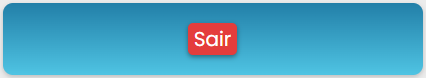
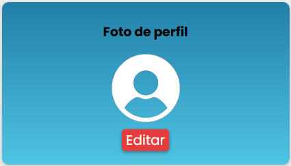
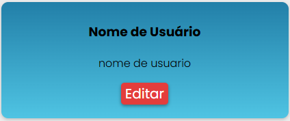
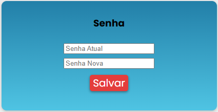
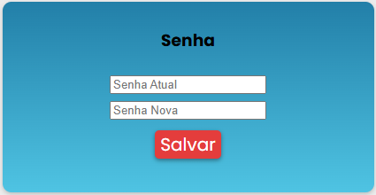
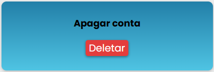

6. Configuracoes
Configurações do usuario
6.1 Sair do perfil
Apertar no botao para sair do perfil para poder voltar na tela de login
6.2 Mudar foto
Apertar no icone de foto para mudar a foto do perfil
6.3 mudar nome
Apertar no icone editar e depois te pedira para escrever o novo nome que deseja colocar
6.4 Mudar senha
Apertar no icone editar e depois te pedira para escrever o atual e a nova senha que deseja colocar
Recomendacoes seguintes na senha: Que a senha contenha letras, numero e um caractere especial, minimo 8 digitos.
A senha nao podera ser a mesma
 

6.5 apagar conta
Apertar no botao apagar conta e depois confirmar a decisao de apagar a conta
